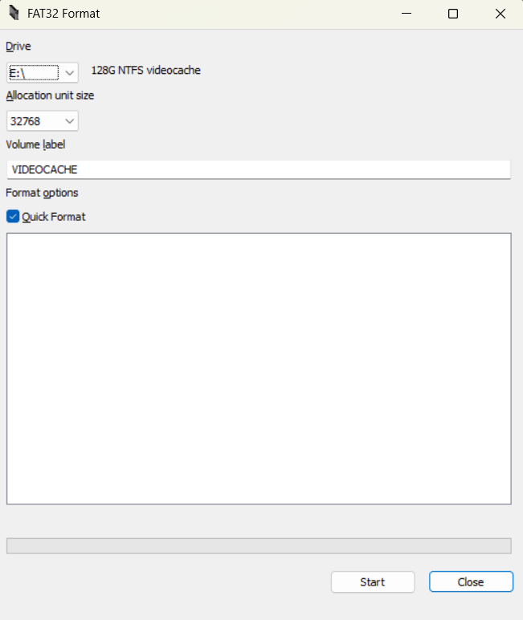

Nintendo Switch v1
Die Nintendo Switch v1 wurde bis Mitte 2018 verkauft und bot die Möglichkeit mit Hilfe der fusée-gelée Methode die Switch zu hacken.
Diese Methode macht es sehr einfach die Switch v1 mit Homebrew zu versehen.
So einfach das man es mit ner Büroklammer machen könnte xD (Tut das bitte nicht)
Setup 1
Für den Jailbreak deiner Switch V1 solltest du erstmal checken, ob du eine V1 hast.
Dies kannst du hier überprüfen: ismyswitchpatched.com
Setup 2
Sobald du sichergestellt hast, dass du eine Switch V1 hast, kannst du loslegen.
Du brauchst folgendes Equipment:
- RCM Jig
- Eine SD-Karte (256GB-1TB empfohlen, Wichtig: Die Switch hat eine Micro-SD)
- Einen PC
- Ein SD-Karten-Lesegerät (falls der PC keinen SD-Slot hat)
- Programm: Tegra RCM GUI
- Programm: Guiformat
Nun kannst du anfangen.
Downloade das neueste CFW-Pack hier. Dieses wird benötigt, um die Switch jailbreaken zu können.
Alles vorbereiten
Formatieren der SD-Karte auf FAT32:
- DownloadeGuiformat.
- Verbinde die SD-Karte mit dem PC.
- Öffne Guiformat und wähle das Laufwerk der SD-Karte aus.
- Klicke auf "Start", um die SD-Karte zu formatieren.
Nun ist die SD-Karte auf FAT32 formatiert.
Öffne den Windows Explorer und entpacke das CFW-Pack auf die SD-Karte.
Stecke nun die SD-Karte in die Switch (die Konsole muss komplett ausgeschaltet sein).
Den Jailbreak ausführen
Stecke den RCM Jig in den rechten Joy-Con-Slot.

Drücke POWER und VOL+ gleichzeitig und verbinde die Switch per USB mit dem PC.
Downloade und installiere Tegra RCM Gui.
Öffne Tegra RCM GUI auf dem PC. Falls eine Meldung erscheint, dass ein Treiber fehlt, installiere diesen.

Wähle "hekate_ctcaer" und drücke auf "Inject Payload". Kurz danach solltest du sehen wie Hekate auf der Switch lädt.